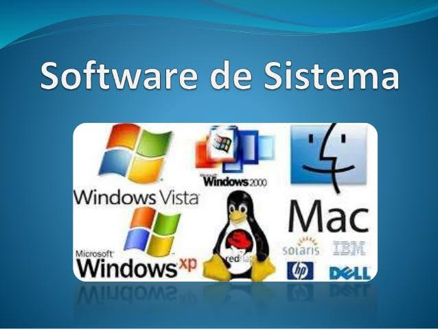
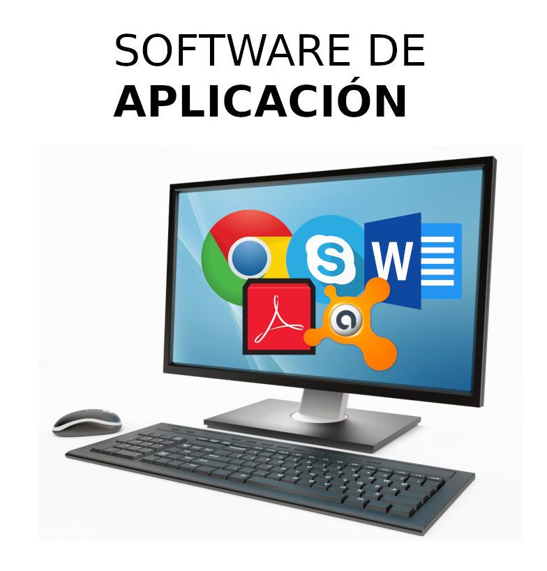
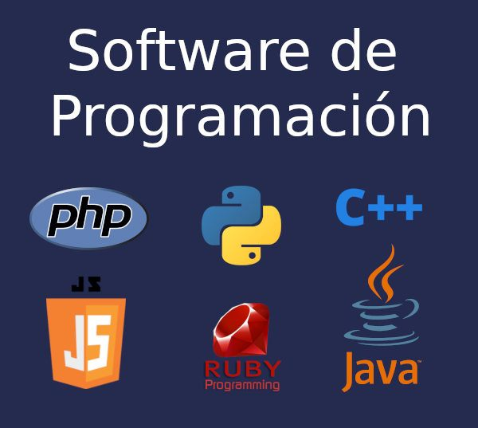
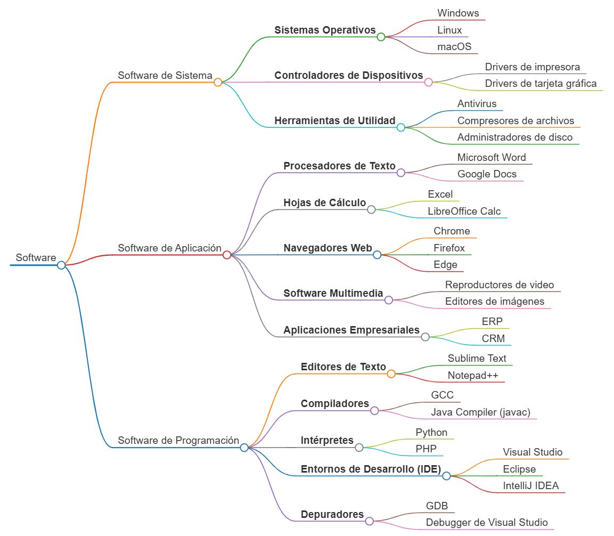

Software e Internet
Que es software
Se define software como “el conjunto de componentes lógicos que hacen posible la realización de tareas específicas” (Carmona Romera, 2017).
Tomando como base esta definición y su aplicación en el área de la confección, será de gran utilidad el conocimiento y dominio de herramientas tecnológicas que permitan mejorar la productividad en los procesos de diseño y confección de modas, tales como, procesadores de texto, hojas electrónicas, presentaciones ejecutivas y bases de datos, junto con el conocimiento y dominio del ciberespacio y herramientas colaborativas.
En el campo de las TIC se encuentran diferentes tipos de software de acuerdo con la función que realizan, bien sea en la administración de los recursos del computador o en las aplicaciones que el usuario necesite para el desempeño de su trabajo.
Tipos de Software
|
 |
Según (Gómez de Silva Garza & Ania Briseño, 2008), el software de sistema está constituido por los programas que se encargan del control y administración de los recursos de cómputo y los que permiten la interacción entre los usuarios y los sistemas de aplicación o el hardware. Ejemplos de este tipo de software son los traductores (compiladores, intérpretes y ensambladores) y los sistemas operativos como Windows, XP o Vista, y varias versiones de Unix, por ejemplo, AIX de IBM. En la actualidad se cuenta con versiones más actualizadas como son Android, IOS, Windows 10, que funcionan inclusive en equipos móviles, generando mayor rendimiento en los dispositivos. |
 |
El software o sistemas de aplicación son los programas que permiten a una computadora realizar actividades específicas de procesamiento de información y ofrecer una funcionalidad a los usuarios finales. (Gómez de Silva Garza & Ania Briseño, 2008). Ejemplo de este tipo de software son los editores o procesadores de texto como Word, hojas de cálculo como Excel, presentaciones ejecutivas como Power Point y antivirus como McAfee o Avast entre otros. |
 |
El software de programación permite a determinados usuarios, la comunicación con la máquina o dispositivo, para el desarrollo de aplicaciones que facilitan el manejo de la información y con ello la toma de decisiones; también se denominan lenguajes de programación. Los lenguajes de programación se clasifican en tres niveles, alto, medio y bajo de acuerdo con su comprensión y cercanía con la máquina o dispositivo. El nivel bajo, se denomina lenguaje de máquina y es utilizado para la creación y administración del software del sistema o sistema operativo y el nivel más alto es utilizado por los programadores en la creación de aplicaciones comerciales o científicas. EL software de programación se presenta a través de Entornos Integrados de Desarrollo (IDE), que ofrecen la posibilidad de construir aplicaciones para diferentes ambientes como la Web y/o dispositivos móviles. Algunos ejemplos de IDE son Netbeans, Eclipse y otros conocidos como editores de programación, entre los cuales se encuentran Visual Studio, Sublime Text, Brackets, Atom. Etc. |
Estructura

Video
Actividad
Actividad práctica
Elaborar un mapa conceptual sobre los tipos de software y los servicios de internet.
Clic en la imagen para ingresar a la herramienta.


Evaluación
Bibliografía
Alliez, P., Di Cosmo, R., Guedj, B., Girault, A., Hacid, M-S., Legrand, A., & Rougier, N. P. (2019, 27 mayo). Attributing and Referencing (Research) Software: Best Practices and Outlook from Inria. arXiv. Recuperado de https://arxiv.org/abs/1905.11123
Rubrica
| Criterio de Evaluación | Nivel Excelente (4) | Nivel Bueno (3) | Nivel Básico (2) | Nivel Inicial (1) |
|---|---|---|---|---|
| Identificación de tipos de software | Identifica correctamente todos los tipos de software (sistema, aplicación, programación, utilitarios, etc.) con ejemplos pertinentes. | Identifica la mayoría de los tipos de software con ejemplos adecuados. | Identifica algunos tipos de software pero con ejemplos limitados o poco precisos. | Presenta confusión o no identifica correctamente los tipos de software. |
| Clasificación del software según su uso | Clasifica de forma precisa cada software en su categoría correspondiente justificando su función. | Clasifica adecuadamente la mayoría de los software con justificación básica. | Realiza clasificaciones parciales o sin justificar. | No clasifica correctamente o no comprende la diferencia entre categorías. |
| Comprensión de funciones y utilidades | Explica claramente la función de cada tipo de software relacionándolo con entornos reales (ofimática, diseño, gestión, etc.). | Explica la función de los software de manera general y comprensible. | Explica parcialmente las funciones sin profundizar. | Tiene dificultad para explicar la utilidad del software. |
| Uso del vocabulario técnico | Utiliza terminología técnica adecuada (software libre, propietario, instalable, en la nube, etc.) con precisión y coherencia. | Usa terminología técnica de forma aceptable con pocos errores. | Utiliza algunos términos técnicos pero de forma imprecisa. | No utiliza vocabulario técnico o lo usa incorrectamente. |
| Aplicación en contextos prácticos | Propone ejemplos de uso del software en situaciones reales (educación, empresa, gestión personal) demostrando comprensión. | Da ejemplos aplicados pero no siempre vinculados al contexto. | Los ejemplos no están relacionados claramente con aplicaciones reales. | No presenta ejemplos o son irrelevantes. |
Escala de valoración sugerida
- 16 - 20 puntos: Dominio alto
- 11 - 15 puntos: Dominio medio
- 6 - 10 puntos: En proceso
- 1 - 5 puntos: Inicio del aprendizaje